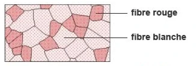

Activité 5 — Les voies de régénération de l’ATP
Lors d’un effort, les têtes de myosine et les pompes qui ramènent le calcium dans le réticulum sarcoplasmique utilisent de l’ATP. Les réserves d’ATP de la fibre sont faibles. Comment la fibre musculaire renouvelle-t-elle cet ATP pendant l’effort ?
1. Explorer les trois voies
Avant d’ouvrir chaque voie, essayez de prévoir si elle utilise du dioxygène et dans quel type d’effort elle est particulièrement sollicitée.
Voie anaérobie alactique →
C’est la voie la plus rapide. Elle ne consomme pas directement de dioxygène et ne produit pas de lactate. Elle contribue fortement à l’apport en ATP au début d’un effort très bref et intense.
Phosphocréatine (PCr) + ADP ⇄ créatine (Cr) + ATP
Enzyme · créatine kinase
2 ADP ⇄ AMP + ATP
Enzyme · adénylate kinase (myokinase)
Les réserves de phosphocréatine sont limitées. Pendant la récupération, l’ATP fourni par la respiration cellulaire permet de reconstituer ces réserves.
Voie anaérobie lactique →
Cette voie fournit rapidement de l’ATP lors d’un effort intense. Elle n’utilise pas directement de dioxygène. L’ATP est formé pendant la glycolyse. La lactate déshydrogénase (LDH) transforme le pyruvate en lactate et régénère le NAD+, ce qui permet à la glycolyse de se poursuivre.
Bilan simplifié pour un glucose
Glucose → 2 lactates
Gain net de la glycolyse · 2 ATP
Voie aérobie →
La respiration cellulaire utilise du dioxygène. Elle fournit davantage d’ATP par molécule de glucose, à un débit maximal plus faible que celui des voies anaérobies. Sa contribution est particulièrement importante lors des efforts prolongés.
C6H12O6 + 6 O2 → 6 CO2 + 6 H2O
Bilan théorique retenu dans le cours · 38 ATP par glucose
À retenir · Les trois voies peuvent fonctionner en parallèle. Leur contribution relative varie selon l’intensité et la durée de l’effort.
2. Relier le type de fibre à l’effort

| Critère | Fibres de type I | Fibres de type II |
|---|---|---|
| Contraction | Lente | Rapide |
| Métabolisme | Riches en mitochondries, à forte capacité aérobie | Capacité variable. Les plus glycolytiques sont riches en glycogène et moins riches en mitochondries. |
| Fatigabilité | Résistantes à la fatigue | Plus fatigables, surtout les plus glycolytiques |
| Effort typique | Posture et endurance | Efforts puissants et brefs, comme le sprint |
3. Raisonner
Vérifier mes réponses →
Départ du sprint · La voie anaérobie alactique fournit très vite de l’ATP, notamment grâce à la phosphocréatine. Si l’effort intense se prolonge, la contribution de la glycolyse augmente.
Course d’endurance · La voie aérobie fournit une part importante de l’ATP sur la durée. Les fibres de type I, riches en mitochondries et résistantes à la fatigue, sont adaptées à ce type d’effort.